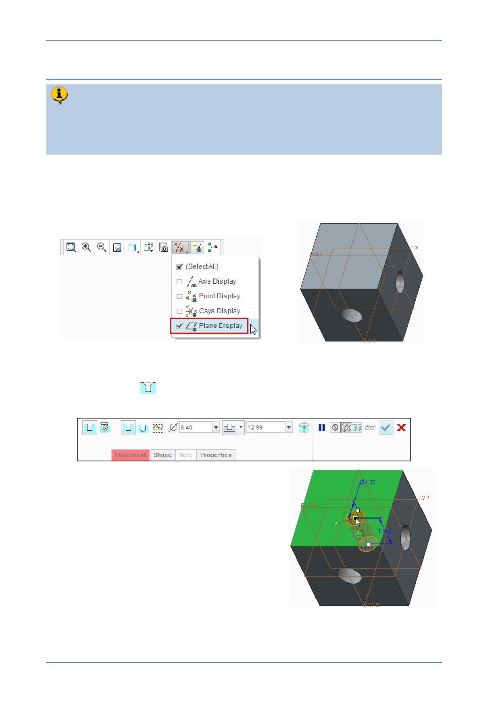

PTC Academic Program
Step 7: Use the Hole tool to create the third hole
Creo Parametric ’s Hole tool is an “engineering” feature meaning it doesn’t rely on
a sketch to define its shape. The placement of a hole feature can be defined in
many different ways. This hole will be placed on the top surface of the cube and
then located using two align constraints from datum planes FRONT and RIGHT.
1. Reorient the model to its default orientation:
Press CTRL + D to change to the Default Orientation.
2. Enable the display of only datum planes.
3. Creating a hole feature:
Start the Hole
tool from the Engineering group of the Model tab.
Notice the Hole dashboard and the feature options.
Click to select the top surface of the model,
shown in green.
Notice the preview of the hole feature is at
the location you selected on the surface.
4. Viewing the model from the top
In the graphics toolbar, open the Named
Views list and select TOP
© 2012 PTC
Creo Parametric 2.0 Primer
Page 34